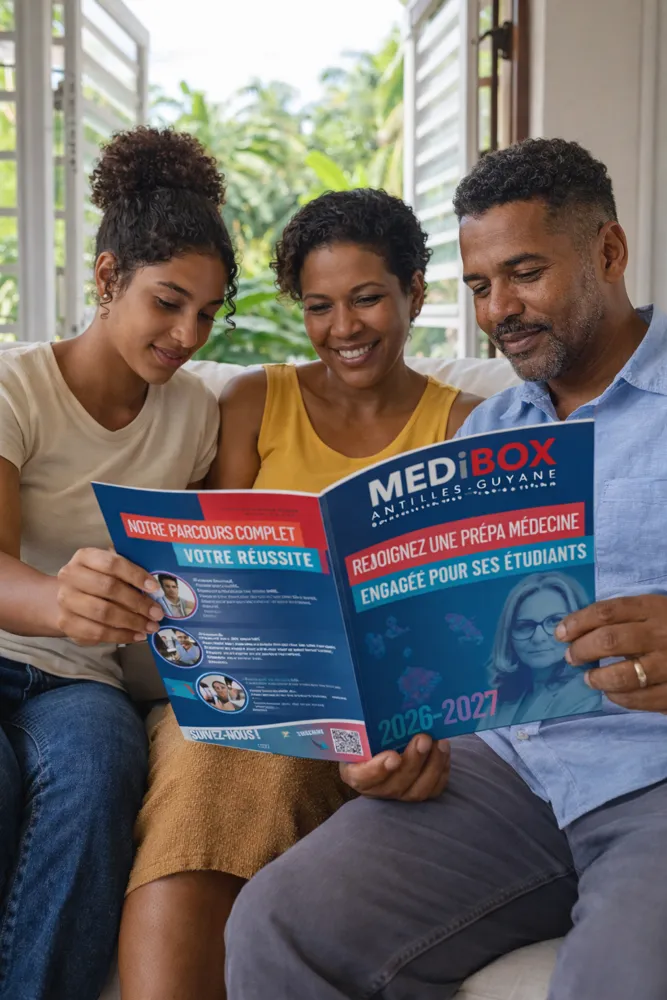
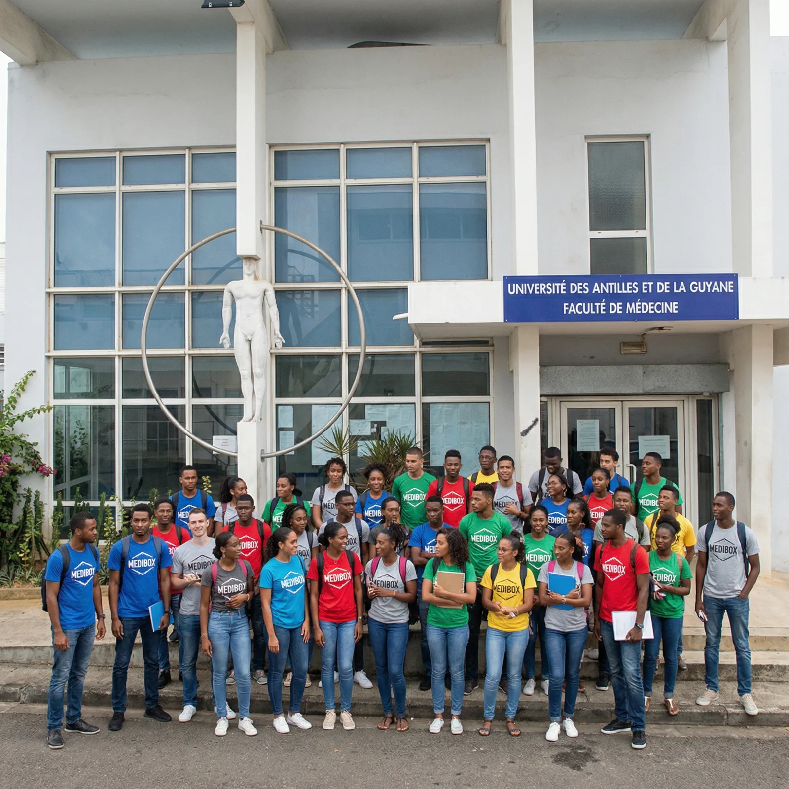

Terminale Santé
S'informer sur la filière PASS-LAS, entraîner sa mémoire et poser sa méthode de travail avant la première année. Le programme 2026-2027 arrive très bientôt.
Découvrir Terminale Santé →Première et unique prépa du territoire à accompagner les étudiants de l'entrée en première année jusqu'à la fin de l'externat. En Guadeloupe, en Martinique et en Guyane.
Rentrée 2026-2027 · places limitées par territoire et par filière

100 % de réussite aux oraux en Guyane 6 ans à vos côtésChiffres internes MediBox Antilles-Guyane au 20 février 2026.
MediBox devient la première prépa des Antilles-Guyane à proposer un accompagnement sur les six premières années des études de médecine. Un seul objectif : votre réussite.
S'informer et se préparer avant la première année
L'année du concours : cadre, méthode et entraînement massif
Bases cliniques solides et anticipation des EDN
Préparation aux EDN et aux ECOS jusqu'à l'internat

S'informer sur la filière PASS-LAS, entraîner sa mémoire et poser sa méthode de travail avant la première année. Le programme 2026-2027 arrive très bientôt.
Découvrir Terminale Santé →Le programme historique de la prépa : cours rédigés et imprimés, 25 000+ QCM, examens blancs chaque semaine, coaching individuel et parents informés. Formules MediPASS, MediFlex et MediLAS+.
Découvrir les formules et tarifs →MediSTART (P2/D1), MediUP (D2/D3) et MediTOP (D4) : cours facultaires transcrits, masterclasses, examens EDN-like, entraînements ECOS sur simulateurs et outils de suivi uniques en France.
Découvrir le programme →Des résultats, des équipes et des modalités adaptés à chaque département. Choisissez le vôtre.
Présentiel 7j/7
Locaux ouverts tous les jours, cours et examens sur place, rentrée anticipée le 17 août 2026.
Découvrir →Distanciel optimisé
Le même accompagnement quotidien, avec des professeurs universitaires de Martinique et un suivi individuel.
Découvrir →Distanciel + coachs sur place
La prépa leader du territoire : 1 admis en médecine sur 4 est passé par MediBox en 2024-2025.
Découvrir →Nous publions nos effectifs réels et nos résultats complets, filière par filière. Exigez la même transparence partout ailleurs.
plus de chances d'être admis en 2è année avec MediBox aux Antilles, et ×6,6 d'être Grand Admis en Guyane.
Taux calculés sur nos effectifs réels 2024-2025 (75 inscrits aux Antilles, 12 en Guyane), détail complet et méthode de calcul sur la page résultats.
Encadrement quotidien de 7h à 20h, planning annuel connu à l'avance et examen blanc chaque semaine.
25 000+ QCM écrits par nos tuteurs, annales reliées dès la rentrée et 300 QCM par semaine recommandés.
Coaching individuel, tuteurs disponibles chaque jour sur Discord et compte-rendu hebdomadaire envoyé aux parents.
Chaque étudiant est connu de la Directrice et sa trajectoire personnelle est suivie tout au long de l'année.
Toutes les astuces et tous les conseils m'ont permis de remonter de 51 places dans le classement. Je suis passée de 108è à 57è, donc admise à l'oral. Je pense honnêtement que je n'aurais pas réussi mes oraux sans MediBox : foncez !
Je suis une étudiante de 35 ans en reconversion, avec une famille et pas de temps à perdre. Humainement, vous n'êtes pas juste un numéro : méthodologie claire, planning construit, un coach pour vous soutenir. Je recommande à 100 %.
Les QCM interactifs, les cours clairs et les ED bien structurés rendent l'apprentissage plus efficace et logique. L'accompagnement est beaucoup plus structuré et on sent une réelle envie de faire progresser les étudiants.
« MediBox est né d'une expérience de parent : transformer les obstacles que nous avons surmontés en ressources pour les familles qui vivent la même situation, année après année. »
Elisabeth Schaeffer · Fondatrice et Directrice
Bienveillance, exigence et innovation constante depuis 2022.
Les places sont limitées dans chaque programme et chaque territoire. Réservez la vôtre pour la rentrée 2026-2027.